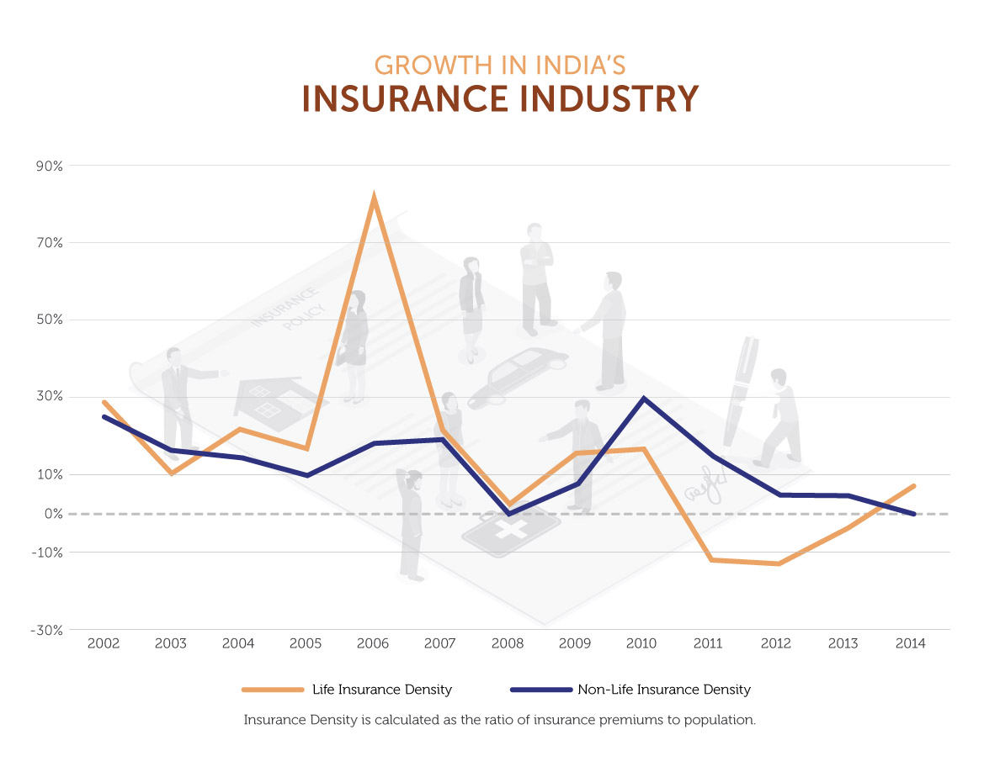

Cover photo by: Owen Young
Pundits sometimes act as if “economic reforms” are a light switch that India’s central government can turn on and off. In reality, the process of reforming the economy is nuanced, involving a diverse set of issues and actors. The following scorecard is a list of thirty big reforms that the Modi government confronted when it took office, and the status of each. Such a list can never be absolutely definitive, and we welcome the feedback of others. We hope this list helps the public understand the choices that are on the table, and that each reform will move at an independent pace. This scorecard will be updated on a monthly basis as we see tangible progress on individual reforms.
To Learn More About the Wadhwani Chair.
Completed
Incomplete
In progress/partial success
Graphic
Video/Audio
In Progress
DIFFICULTY: High
Will combine most of India's state and local taxes into a streamlined tax system.
Both houses of Parliament passed the implementing legislation, and the President has given his assent. Now all 29 states must pass the model law for the GST to take effect nation-wide.
In Progress
DIFFICULTY: Medium
Eliminate the Revenue Department’s ability to retrospectively apply new tax laws. This provision, introduced in 2012, creates uncertainty for foreign investors.
In his February 29 Budget Speech Finance Minister Jaitley announced that the Revenue Secretary would chair a high-level committee that had to approve all retrospective tax demands and offered a one-time dispute resolution opportunity for parties to current cases.
Complete
DIFFICULTY: Medium
Deregulating diesel pricing will lower government subsidies and also encourage the expansion of private hydrocarbon production.
The government deregulated diesel pricing on 10/18/2014.
In Progress
DIFFICULTY: Medium
Deregulating natural gas pricing will encourage the expansion of private hydrocarbon production.
On March 10, the Cabinet announced a new energy policy that switches to a revenue-sharing model (from a profit-sharing model), allows substantial pricing freedom for difficult fields, and eliminates minimum acreage requirements for new fields. While not total price deregulation, the policy offers new incentives for private hydrocarbon exploration.
Incomplete
DIFFICULTY: High
Deregulating kerosene pricing will lower government subsidies and also encourage the expansion of private hydrocarbon production.
The government has authorized public sector oil marketing companies to increase the price of kerosene by .4 cents a liter each month for the next 10 months.
Incomplete
DIFFICULTY: High
Removing minimum support prices will reduce the government’s subsidy burden and help end the over-production of staple grains.
In Progress
DIFFICULTY: Medium
Direct cash payments programs, such as pensions, should employ Direct Benefit Transfers to send funds to recipients.
The government is testing a pilot program for providing subsidies via DBT to fertilizer manufacturers in 16 districts.
In Progress
DIFFICULTY: High
Programs where the government broadly subsidizes goods for targeted groups should be shifted to Direct Benefit Transfer programs to strengthen targeting and reduce diversion.
Direct Benefit Transfer for kerosene subsidies is being implemented in 39 districts over the current fiscal year.
Incomplete
DIFFICULTY: High
Deregulating fertilizer subsidies will lower government subsidies, increase private investment, and reduce over-fertilization that can erode soil viability.
On 5/13/15 the government announced a new four-year urea policy that will continue the price regulation regime.
In Progress
DIFFICULTY: High
Allow foreign investors to own a majority stake in life and non-life insurance firms.
In his February 29 Budget Speech Finance Minister Jaitley announced that FDI in insurance will be automatically allowed up to the sectoral cap of 49%.
In Progress
DIFFICULTY: Medium
Allow foreign investors to own a majority stake in defense production firms.
The Ministry of Defence rejected the first-ever proposal to establish a 100% foreign-owned defense manufacturer in India.
Complete
DIFFICULTY: Low
Allowing foreign investors to own a majority stake in the railway-related businesses will encourage much-needed investment in infrastructure.
DIPP Press Note 8 (2014), issued 8/27/2014, opened most of the railways sector to 100 percent FDI.
Incomplete
DIFFICULTY: High
Allowing foreign law firms to establish offices and practice law in India will lower barriers to doing business in India.
The government amended regulations governing Special Economic Zones (SEZs) to allow the practice of law in SEZs, perhaps opening the door to foreign law firms setting up outposts there.
Complete
DIFFICULTY: Low
Relax the rules specifically governing foreign investment in construction projects, including minimum built-up space and lock-in periods.
DIPP Press Note 12 removed almost all restrictions on FDI in construction, including minimum project size, and reduced the lock-in period for capital to three years (or as soon as trunk infrastructure is completed, whichever comes first).
In Progress
DIFFICULTY: Medium
FDI was opened in Sept. 2012. But rules governing foreign investment — minimum investment size, sourcing rules, and location — have precluded investment in this sector.
In Progress
DIFFICULTY: Medium
FDI in single-brand retail was opened in September 2012. However, foreign firms must source 30% of what they sell from local manufacturers.
Press Note 5 of 2016 allows FDI up to 100% via the government approval route, but requires that 30% of goods sold in the first 5 years be manufactured in India. This period is tolled 3 years for 'cutting edge' technology.
In Progress
DIFFICULTY: Low
While FDI is allowed in business-to-business e-commerce, and in e-commerce that uses a marketplace model, the sector is still closed to FDI when companies sell directly to consumers.
Press Note 3 of 2016 clarified that FDI is not allowed in business-to-consumer e-commerce, unless items are all being sold under a single brand and meet local-content requirements.
Complete
DIFFICULTY: Medium
Coal mining for public sale was previously the exclusive right of government-owned “Coal India” and its subsidiaries.
Parliament approved the Coal Mines (Special Provisions) Act, 2015 on 3/20/2015, opening the sector to private—including foreign—investment.
Incomplete
DIFFICULTY: High
India’s Industrial Disputes Act sets a floor of 100 employees after which government permission is required to lay off workers. Some firms choose to remain below this level, giving up growth opportunities, in order to retain flexibility.
In Progress
DIFFICULTY: Medium
Banks are required to direct 40% of loans to "priority sectors", including agriculture, small businesses, education, and housing. This slows growth by reducing capital available for the fastest-growing industries.
On April 7 2016 RBI put into effect a new scheme that allows banks to trade priority lending certificates, thus avoiding the requirement that they lend in sectors where they have little expertise or interest.
In Progress
DIFFICULTY: Medium
In 2013, the Financial Sector Legislative Reforms Commission called for stronger rules for regulatory interventions. This includes clearly stating the purpose of new regulations, mandatory notice & comment periods, and impact studies.
The Ministry of Finance recently solicited comments on a Task Force Report proposing the structure of a new Financial Redress Agency (FRA). First recommended by the FSLC, the FRA that will act as a consumer regulator of the financial services industry.
In Progress
DIFFICULTY: High
The current law governing eminent domain requires that states obtain approval from at least 80% of residents before buying land, making it difficult to find plots for industry and infrastructure.
The new national land acquisition law, although it passed in the Lok Sabha, failed in the Rajya Sabha, and the government is no longer making this issue a legislative priority.
Complete
DIFFICULTY: Low
Onerous licensing is one aspect of India’s difficult “doing business” environment. Extending the validity of industrial licenses will decrease the frequency businesses will need to undertake this exercise.
DIPP Press Note 9 (2014), issued on 12/20/2014, increased the maximum validity of an industrial license from two years to seven years.
Complete
DIFFICULTY: High
India’s laws do not allow for a quick resolution of dead companies. The long process of winding up bankrupt companies contributes to overall legal paralysis, and locks up assets and intellectual property that could be deployed elsewhere.
The first case under the new Insolvency Code has begun in the Maharashtra High Court.
Incomplete
DIFFICULTY: Medium
The World Bank's Ease of Doing Business Report 2017 notes that it requires 12.9 procedures to start a business in India, compared to the South Asia regional average of 8.1.
Incomplete
DIFFICULTY: Medium
According to the World Bank's Ease of Doing Business Report 2017, it takes 26 days to start a business, more than in any other country in South Asia.
In Progress
DIFFICULTY: Medium
A consistent, transparent regulatory environment gives businesses greater confidence.
The Ministry of Law & Justice sent a letter on 2/5/2014 to all ministries, urging them to comply with a 30 day notice & comment period and other rules. Implementation has been inconsistent.
Incomplete
DIFFICULTY: Low
The long-standing 10% limit on single institutional investors hinders investment in high-growth Indian companies. SEBI raising this threshold — even to 20% — will unlock significant liquidity for listed Indian companies.
In his February 29 Budget Speech Finance Minister Jaitley raised the investment limit for foreign portfolio investors in public sector enterprises from 49% from 24% and allowed FPIs up to 100% of each tranche of securities released by asset reconstruction companies. Neither change has yet been notified by RBI.
Complete
DIFFICULTY: Low
India historically reserved dozens of products and sectors for small and medium businesses. The rules prevented successful businesses manufacturing these goods from expanding and limited their access to capital.
On 4/10/2015 the government removed the last 20 products from the reserved list.
Complete
DIFFICULTY: Medium
Government must conduct auctions in a way that allocations of the spectrum being auctioned off are transparent and create a barrier to participation.
India has now conducted multiple free and fair telecom auctions with no complaints from private-sector participants.
India Reforms is a product of the Andreas C. Dracopoulos iDeas Lab, the in-house digital, multimedia, and design agency at the Center for Strategic and International Studies.
© The Center for Strategic and International Studies 2017 | Back to top
{kind=link}
{kind=link}
{kind=link}